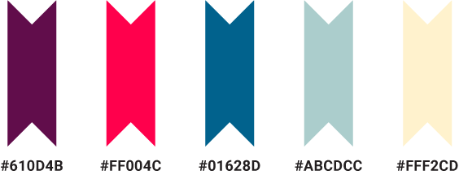

- Motifs
-
These shapes are inspired from our logo pattern and their usage helps maintain our brand consistency.

If the SFAF made website improvements, they would be more successful at fulfilling their mission to reduce new HIV infections, better the health of people living with HIV, and build stronger communities.
A redesign would not only make San Francisco a healthier place, it could save lives.
The San Francisco AIDS Foundation’s brand strategy involves reflecting on our past in order to help us build a new future.
The AIDS Memorial Quilt, conceived by Cleve Jones, was contructed in the the late 1980’s as a memorial to those we lost to AIDS. The quilt reflects the SFAF’s mission: to provide therapy and create community to those affected by HIV and AIDS.
We will never forget those we’ve lost as we forge ahead together, stronger and healthier than ever before.
Our logo conveys a lot of meaning. First, it consists of vibrant pink triangles, which is an important symbol for the LGBT community. Second, it bears a cross, which represents health, as well as the plus sign used by HIV positive individuals. Finally, it resembles a quilting pattern to commemorate the AIDS Memorial Quilt.
Barrio is the typeface used for the logo and main headers. It has an urban, multicultural feel that reflects our brand. Roboto is used for content.
Our color palette is bright and vibrant, just like our community!
These shapes are inspired from our logo pattern and their usage helps maintain our brand consistency.
Images must represent the San Francisco AIDS Foundation's personality: friendly, compassionate, and outgoing. Images may also represent hope, health, diversity, equality, and community. We encourage the use of the motifs as overlays for images.